Lecture 10 — Part 4.1 Sequence Modelling
Lesson 7–9 ทำงานกับภาพ ซึ่งสิ่งสำคัญคือตำแหน่งในพื้นที่ บทนี้เปลี่ยนเป็นข้อมูลที่สิ่งสำคัญคือลำดับ ได้แก่อนุกรมเวลาและข้อความ เรื่องเริ่มจาก RNN ที่อ่านทีละ step และจำสิ่งที่อ่านมาแล้ว ต่อด้วย GRU กับ LSTM ที่แก้ปัญหา RNN ลืมเรื่องที่อยู่ไกล แล้วจบที่การแปลงข้อความเป็นตัวเลขให้ RNN อ่านได้ ข้อสอบชอบถาม shape ของ input, จำนวน parameter ของ RNN, GRU, LSTM และค่า memory หลังผ่าน gate ซึ่งคิดด้วยมือได้ทั้งหมด
| คำถาม | คำตอบสั้น | อ่านที่ |
|---|---|---|
| ทำไมต้องมี RNN | ลำดับสำคัญ ความยาวไม่เท่ากัน และต้องใช้ weight ซ้ำทุกตำแหน่ง | ตอน 1 |
| RNN มีกี่แบบ เทรนอย่างไร | สี่แบบตาม \(T_x, T_y\) · BPTT บวก gradient ทุก step | ตอน 2 |
| GRU, LSTM แก้อะไร | gate คัดลอก memory ข้าม step ได้ gradient ไม่หาย | ตอน 3 |
| exploding gradient, dropout, bidirectional | clipping, tanh · recurrent dropout · อ่านสองทิศ · ซ้อนชั้น | ตอน 4 |
| เตรียมข้อความอย่างไร | standardize → tokenize → vectorize · embedding แทน one-hot | ตอน 5 |
| โค้ด IMDB | TextVectorization, TF-IDF bigram, Embedding + Bi-LSTM, masking | ตอน 6 |
สีในสมการ: สีส้ม คือ weight และ gate ที่เรียนได้
| \(x^{\langle t \rangle},\ \hat{y}^{\langle t \rangle}\) | input และ output ที่ time step \(t\) |
| \(a^{\langle t \rangle}\) | hidden state ที่ step \(t\) · \(a^{\langle 0 \rangle} = 0\) |
| \(T_x,\ T_y\) | ความยาวลำดับ input และ output |
| \(c^{\langle t \rangle},\ \tilde{c}^{\langle t \rangle}\) | memory cell และค่าใหม่ที่เสนอ |
| \(\Gamma_u, \Gamma_r, \Gamma_f, \Gamma_o\) | update, reset, forget, output gate · sigmoid ช่วง 0 ถึง 1 |
| \(*\) | คูณทีละสมาชิก |
อ่านนิยายทีละหน้าแล้วลืมหน้าก่อนทุกครั้ง จะไม่รู้ว่าใครเป็นใคร การอ่านลำดับต้องจำสิ่งที่อ่านมาแล้วติดตัวไปด้วย
ข้อมูลเชิงลำดับคือข้อมูลที่เรียงตามindex บางอย่าง เช่น time series ที่เรียงตามเวลา ข้อความที่เรียงตามคำ และเสียงพูด งาน natural language processing ที่ใช้ข้อมูลแบบนี้มีหลายรูป เช่น sentiment อ่านรีวิวหลายคำแล้วให้ดาวค่าเดียว speech recognition ฟังเสียงแล้วให้ข้อความ music generation รับแนวเพลงค่าเดียวแล้วสร้างลำดับโน้ต
dense network ที่เรียนมาใน Lesson 2–6 ไม่เหมาะกับข้อมูลแบบนี้ด้วยเหตุผลสามข้อ
| เหตุผล | dense network ทำไม่ได้เพราะ |
|---|---|
| ลำดับของสมาชิกสำคัญ ค่าที่ step หนึ่งขึ้นกับ สมาชิกก่อนหน้า | ไม่สน ลำดับ และ ความสัมพันธ์ระหว่างคำ · "The dog bites the man." กับ "The man bites the dog." คำชุดเดียวกัน ความหมายตรงข้าม |
| ลำดับมี ความยาว ต่างกัน | ต้อง ยาวคงที่เท่ากัน เพราะ node ของ input layer ตายตัว |
| ต้อง ใช้ feature ที่เรียนได้ซ้ำทุกตำแหน่ง | มี ไม่มี state ที่ส่งต่อ · รู้จัก "dog" ที่ตำแหน่ง 2 ไม่ช่วยตำแหน่ง 5 เพราะคนละ weight |
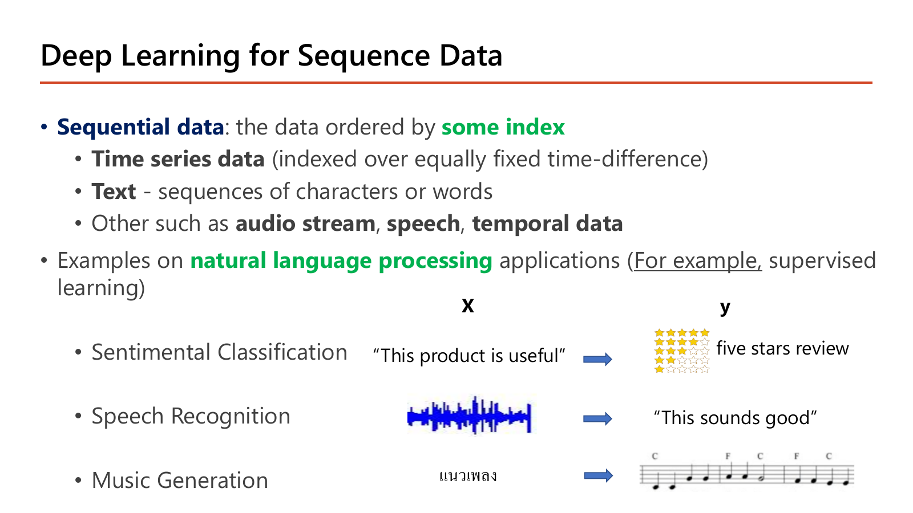
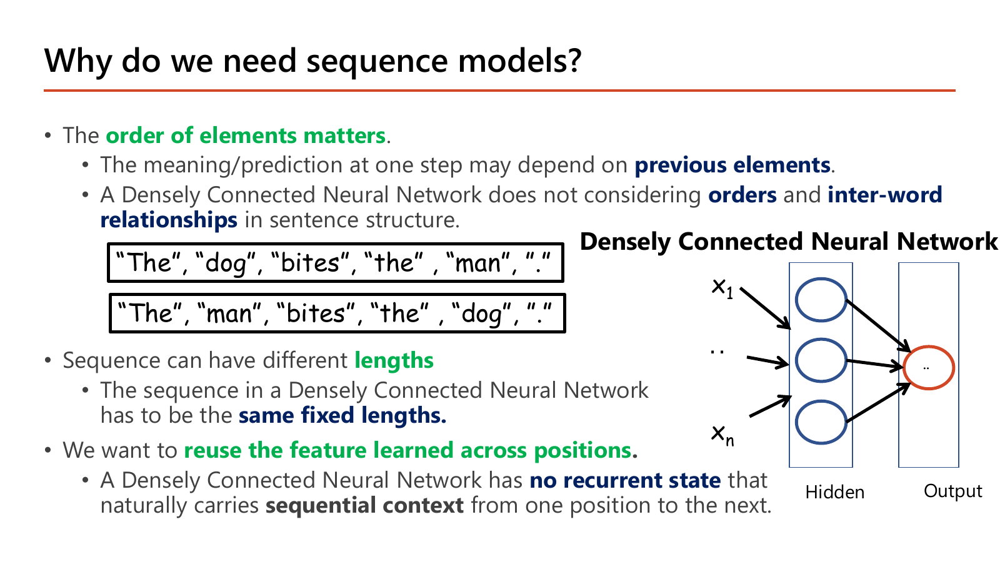
RNN แก้ทั้งสามข้อด้วยการอ่านทีละ step แต่ละ step รับสมาชิกหนึ่งตัวของลำดับ แล้วเก็บความจำของสิ่งที่เห็นมาแล้วไว้ใน hidden state ลูกศรวนกลับในรูปคือ output ของ hidden layer ที่ step นี้ถูกส่งกลับมาเป็น input ของ step ถัดไป และเพราะใช้ weight ชุดเดิมทุก step จึงรับลำดับยาวเท่าใดก็ได้ แม้ในทางปฏิบัติมักใช้input ขนาดคงที่เพื่อจัดเป็น batch ให้คำนวณเร็ว
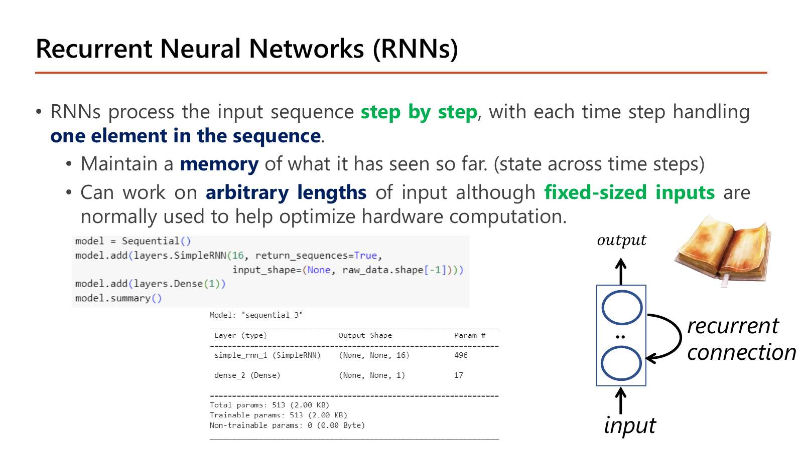
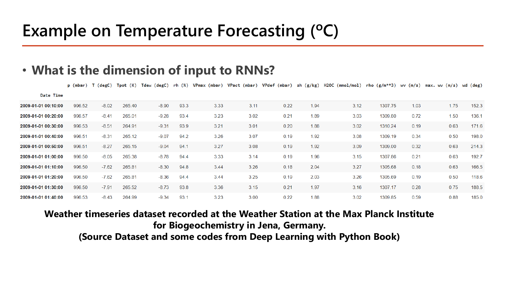
ข้อมูลที่ใช้ทั้งบทคือตารางนี้ weather timeseries จาก Jena หนึ่งแถวต่อ 10 นาที มี 14 คอลัมน์ เช่นความกดอากาศ p ค่าแรก 996.52 และอุณหภูมิ T ค่าแรก −8.02 ซึ่งเป็นค่าที่จะทาย เลข 14 ในโค้ดและสูตรข้างล่างคือจำนวนคอลัมน์นี้ ส่วน −8.02, −8.41, −8.51 คืออุณหภูมิสามแถวแรกที่จะเห็นอีกในหน้า 6
โค้ดในสไลด์หน้า 4 ข้างบนใช้ SimpleRNN 16 neuron กับข้อมูลนี้ raw_data.shape[-1] คือ 14 สังเกตว่าจำนวน parameter ไม่ขึ้นกับความยาวลำดับ ลำดับยาว 3 หรือ 120 ก็ใช้ weight ชุดเดียวกัน
model = Sequential()
model.add(layers.SimpleRNN(16, return_sequences=True,
input_shape=(None, raw_data.shape[-1])))
model.add(layers.Dense(1))
model.summary()layers.SimpleRNN(16, ...) | hidden state ยาว 16 |
return_sequences=True | คืน state ทุก step shape (None, None, 16) · default False คืนแค่ step สุดท้าย (None, 16) |
input_shape=(None, raw_data.shape[-1]) | (ความยาวลำดับ, feature) · None = ยาวเท่าใดก็ได้ · 14 feature |
layers.Dense(1) | ทาย 1 ค่าต่อ step |
n คือจำนวน neuron m คือจำนวน feature ของ input · n·m จาก input, n·n จาก state ก่อนหน้า, n คือ bias
n = 16, m = 14: W_x 14·16 = 224 · W_a 16·16 = 256 · bias 16 · รวม 496 · Dense(1) 17 · ทั้งโมเดล 513 ตรงกับ model.summary() ในสไลด์หน้า 4 · ถ้าเป็น Dense 16 node จะได้ 240 ส่วนต่าง 256 คือ recurrent connection
หัวสไลด์หน้า 5 ถามว่า "What is the dimension of input to RNNs?" คำตอบคือสามมิติ
กี่ตัวอย่างต่อ batch, แต่ละตัวอย่างยาวกี่ step, แต่ละ step มีกี่ตัวแปร
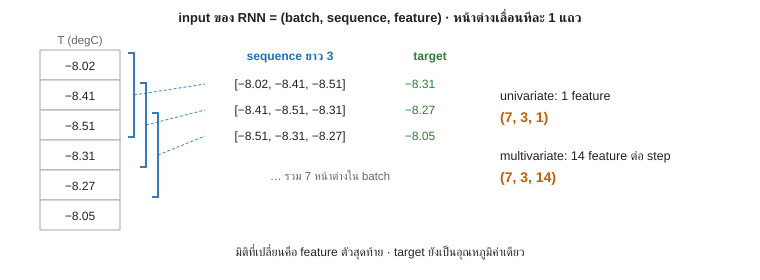
หน้าต่างยาว 3 เลื่อนลงทีละแถว target คือค่าถัดจากหน้าต่าง batch ตัวอย่างนี้มี 7 หน้าต่าง ถ้าใช้แค่อุณหภูมิได้ (7, 3, 1) ถ้าใช้ทั้ง 14 คอลัมน์ได้ (7, 3, 14)
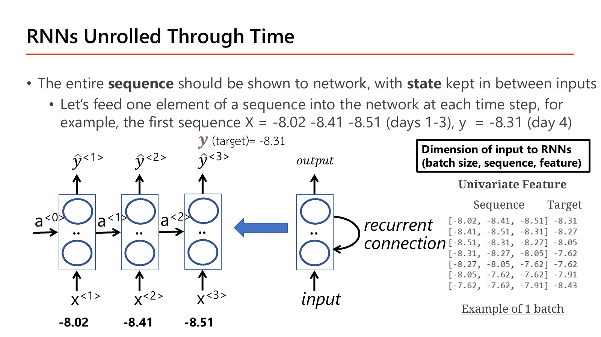
แบบ univariate แต่ละ step มีค่าเดียวคืออุณหภูมิ ป้อน −8.02, −8.41, −8.51 แล้วทาย −8.31 รูปที่วาด RNN เรียงสามกล่องเรียกว่า unrolled คือ RNN ตัวเดียวกันวาดซ้ำสามครั้งตามเวลา ไม่ใช่สาม layer
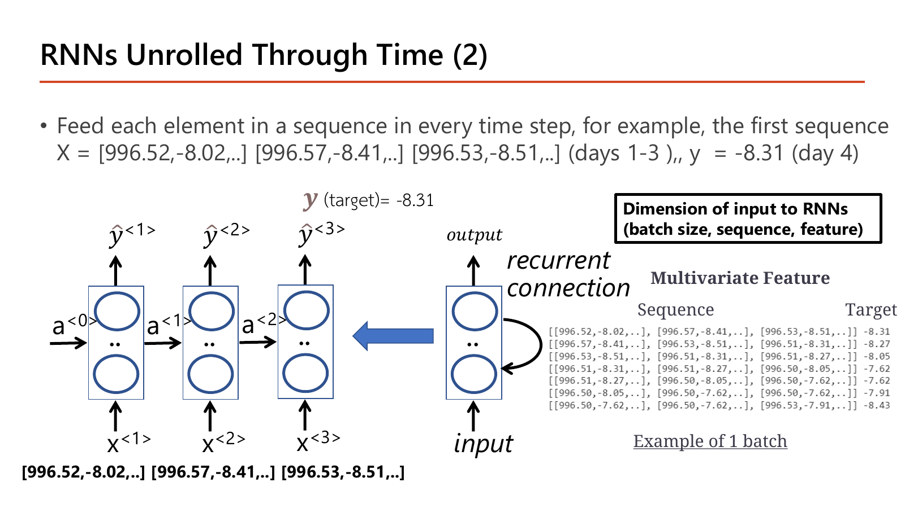
แบบ multivariate แต่ละ step เป็น vector 14 ค่า เช่น [996.52, −8.02, …] แต่ target ยังเป็นอุณหภูมิค่าเดียว −8.31
ความยาวลำดับไม่อยู่ในสูตร parameter · univariate คือ feature = 1 ไม่ใช่ sequence = 1
32 × (32 + 10) + 32 = 1,344 + 32 = 1,376
state ใหม่ = activation ของ state เก่าผ่าน W_a บวก input ปัจจุบันผ่าน W_x บวก bias · g ของ state คือ tanh · step แรกใช้ a⟨0⟩ = 0
| \(W_x\) | \(n_{inputs} \times n_{neurons}\) weight ของ input |
| \(W_a\) | \(n_{neurons} \times n_{neurons}\) weight ของ state ก่อนหน้า |
| \(W\) | \((n_{neurons} + n_{inputs}) \times n_{neurons}\) คือ W_a กับ W_x ต่อกัน · 16 กับ 14 ได้ 30 × 16 = 480 |
| \(a^{\langle t \rangle}\) | \(m \times n_{neurons}\) เมื่อ m คือจำนวนตัวอย่างใน batch |
จุดสำคัญคือ W_a, W_x และ W_y ใช้ชุดเดียวกันทุก time step แบบเดียวกับที่ filter ของ CNN ใช้ซ้ำทุกตำแหน่ง parameter จึงน้อยลงมาก หน่วยที่ทำงานวนซ้ำนี้เรียกว่า memory cell
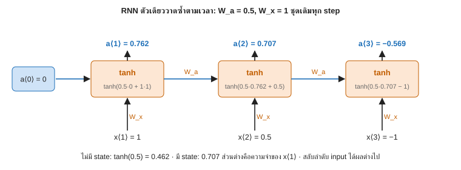
ตัวอย่างในรูปใช้ W_a = 0.5, W_x = 1, bias 0 และ input 1, 0.5, −1 แต่ละกล่องคือ cell เดียวกันที่ step ต่างกัน state ของ step ก่อนถูกส่งเข้า step ถัดไปตามลูกศรฟ้า
a⟨1⟩ = tanh(0.5·0 + 1) = 0.7616 · a⟨2⟩ = tanh(0.5·0.7616 + 0.5) = tanh(0.8808) = 0.7068 · a⟨3⟩ = tanh(0.5·0.7068 − 1) = tanh(−0.6466) = −0.5694
unrolled 3 step ไม่ใช่ 3 layer ที่ weight ต่างกัน · weight ชุดเดียวใช้ทุก step
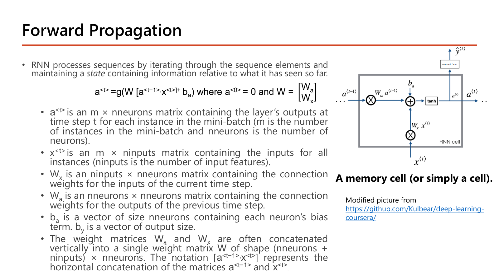
RNN แบ่งได้สี่แบบตามความยาวของ input (\(T_x\)) และ output (\(T_y\))
| ชนิด | เงื่อนไข | ตัวอย่าง | Keras |
|---|---|---|---|
| sequence-to-vector | \(T_x > 1,\ T_y = 1\) | sentiment: รีวิว → ดาว | return_sequences=False |
| vector-to-sequence | \(T_x = 1,\ T_y > 1\) | music generation, language model สร้างชื่อทีละตัวอักษร output ป้อนกลับเป็น input | |
| sequence-to-sequence | \(T_x = T_y\) | named entity recognition ติดป้าย 0/1 ทุกคำ | return_sequences=True |
| encoder–decoder | \(T_x \neq T_y\) | แปล "Good Morning" → "สวัสดีครับ" decoder เริ่มจาก <SOS> |
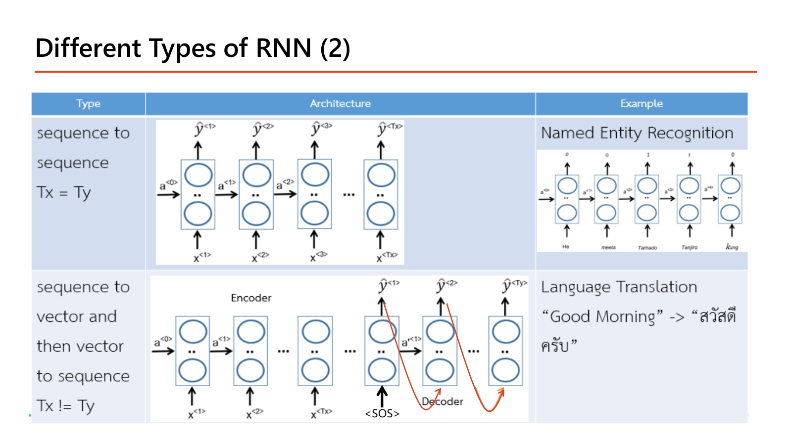
การแปลภาษาใช้ sequence-to-sequence ตรงๆ ไม่ได้ เพราะจำนวนคำต้นทางกับปลายทางไม่เท่ากัน encoder จึงอ่านทั้งประโยคเก็บเป็น vector ก่อน แล้ว decoder ค่อยสร้างประโยคใหม่ทีละคำ เรื่องนี้ใช้ต่อใน Lesson 11
BPTT คือ backpropagation บน network ที่คลี่ตามเวลา ขั้นแรกforward ผ่าน network ที่คลี่ แล้วประเมินลำดับ output ด้วย cost function ซึ่งรวม loss ของทุก time step จากนั้นส่ง gradient ย้อนกลับตามเวลา และอัปเดต parameter จุดที่ต่างจาก backprop ปกติคือweight ใช้ร่วมกันทุก step จึงต้องบวก gradient ของทุก step เข้าด้วยกันก่อนอัปเดต และloss อาจไม่ใช้บาง output เช่น sequence-to-vector ที่ใช้แค่ output สุดท้าย
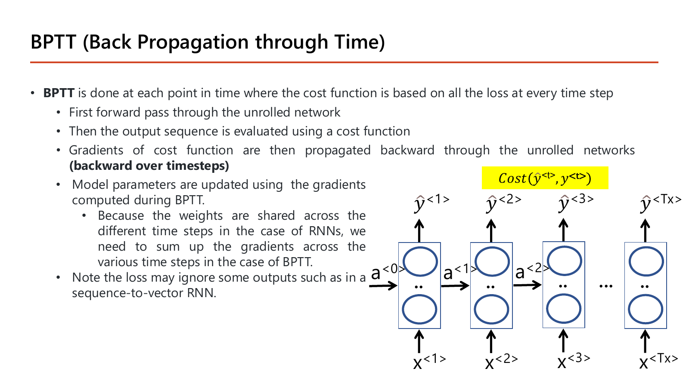
ในรูป gradient ของ W_a จากสาม step ถูกรวมเป็นค่าเดียว เพราะ W_a มีตัวเดียวและอัปเดตครั้งเดียว
สมมติ W_a เดิม 0.50 และ gradient ของ W_a จาก 3 step = 0.20, 0.05, −0.10 รวม 0.15 · lr 0.1: W_a = 0.50 − 0.1 × 0.15 = 0.485
เล่นกระซิบต่อกันสิบคน ข้อความของคนแรกเพี้ยนและจางลงทุกครั้งที่ส่งต่อ พอถึงคนสุดท้ายแทบไม่เหลือ
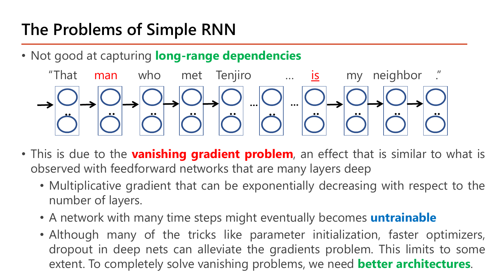
Simple RNN จับความสัมพันธ์ระยะไกลได้ไม่ดี เช่นประโยค "That man who met Tenjiro … is my neighbor." กริยา is ต้องเป็นเอกพจน์ให้เข้ากับ man ที่อยู่ห่างออกไปหลายคำ ความสัมพันธ์man กับ isนี้หายไปเพราะปัญหา vanishing gradient แบบเดียวกับ network ที่ลึกมากใน Lesson 5 ตอนส่ง gradient ย้อนเวลา gradient ถูกคูณซ้ำทุก step จึงเล็กลงแบบ exponential ตามจำนวน step ลำดับที่ยาวมากจึงอาจเทรนไม่ได้ initialization, optimizer หรือ dropout ช่วยได้บ้าง แต่จะแก้จริงต้องเปลี่ยนเป็นสถาปัตยกรรมที่ดีกว่า คือ GRU และ LSTM ในตอนถัดไป
สมมติ gradient ถูกคูณด้วยค่าเดิมทุก step ที่ย้อน · ตัวคูณ 0.9 ย้อน 10 step: 0.349 · 50 step: 0.0052 · ตัวคูณ 0.5 ย้อน 10 step: 0.00098 · ตัวคูณ 1.1 ย้อน 50 step: 117.4 คือ exploding
BPTT บวก gradient ทุก step แล้วอัปเดตครั้งเดียว ไม่ใช่อัปเดตทีละ step · ตัวคูณมากกว่า 1 นิดเดียวก็ระเบิดได้
จดโน้ตลงสมุด เจอข้อมูลสำคัญก็เขียนทับ เจอเรื่องไม่สำคัญก็ไม่แตะสมุด หน้าที่จดไว้จึงอยู่รอดไปถึงตอนต้องใช้
GRU (Cho et al., 2014) เพิ่มทางให้ข้อมูลข้ามหลาย step ได้โดยไม่จาง ใน GRU memory cell คือ hidden state เอง \(c^{\langle t \rangle} = a^{\langle t \rangle}\) แบบ simplified มี gate ตัวเดียวคือ update gate Γ_u ซึ่งตัดสินทุก step ว่าจะเขียน memory ใหม่หรือเก็บของเดิมไว้ สไลด์หน้า 14 ใช้ประโยค "Man … is" แถว Γ_u ใต้แต่ละคำคือ 1, 0, 0, 0 ที่คำ man, who, met, Tenjiro ส่วนช่อง ? ที่คำ is คือสิ่งที่ต้องคิดต่อ
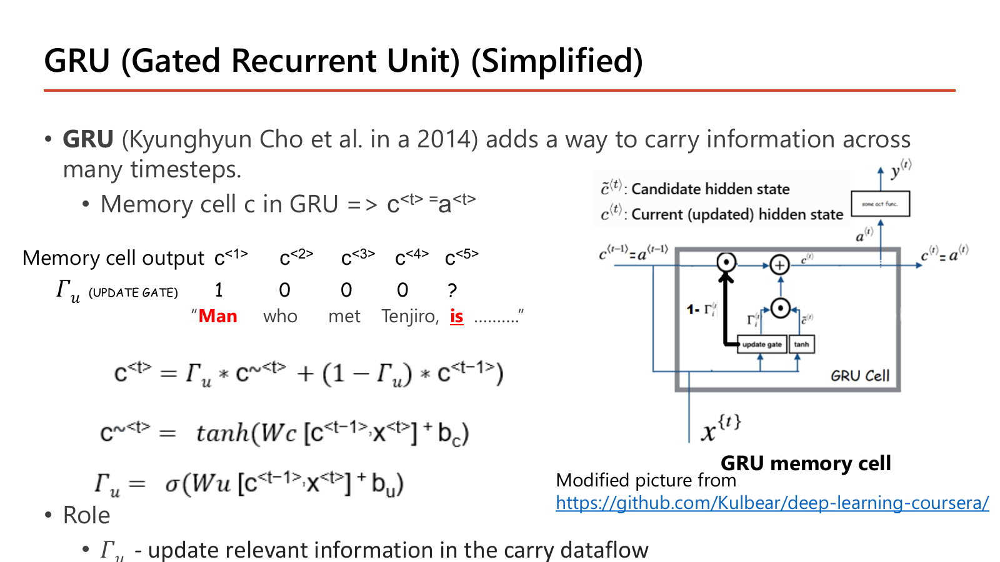
อ่านตารางในรูปเป็นสองแถว แถวบนคือ memory c⟨1⟩ ถึง c⟨5⟩ แถวล่างคือ Γ_u ของคำนั้น ค่า 1 ที่ man คือเขียนข้อมูลใหม่ลง memory ค่า 0 สามตัวถัดมาคือเก็บของเดิมไว้ หน้า 15 ข้างล่างไล่สูตรทีละคำให้ดู
memory ใหม่ = ส่วนที่ gate เปิด × ค่าใหม่ที่เสนอ + ส่วนที่ปิด × memory เดิม · Γ_u คือ update gate หน้าที่ update ข้อมูลที่เกี่ยวข้องใน carry dataflow
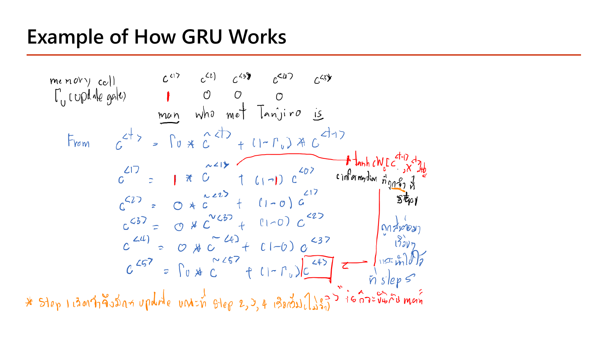
man ได้ Γ_u = 1 memory จึงรับข้อมูล "ประธานเอกพจน์" เต็มที่ ส่วน who, met, Tenjiro ได้ Γ_u = 0 memory จึงถูกคัดลอกต่อไปเฉยๆ c⟨4⟩ = c⟨1⟩ พอถึง is จึงยังรู้ว่าต้องใช้กริยาเอกพจน์ การคัดลอกตรงๆ แบบนี้ยังเป็นทางลัดให้ gradient ไหลย้อนได้โดยไม่จาง คล้าย skip connection ของ ResNet
สมมติค่าใหม่ c̃ = −0.2 และ memory เดิม c⟨t−1⟩ = 0.8: Γ_u = 1 ได้ −0.2 · Γ_u = 0 ได้ 0.8 · Γ_u = 0.25 ได้ 0.25·(−0.2) + 0.75·0.8 = 0.55
Full GRU เพิ่ม gate ตัวที่สอง Γ_r เรียกว่า relevant หรือ reset gate คุมว่า memory เดิมเกี่ยวข้องแค่ไหนตอนสร้างค่าใหม่ที่เสนอ (candidate) ถ้า Γ_r = 0 candidate จะมาจาก input ปัจจุบันอย่างเดียว เหมือนเริ่มเรื่องใหม่
ต่างจากแบบ simplified จุดเดียว: memory เดิมถูกคูณด้วย Γ_r ก่อนเข้าคำนวณค่าใหม่
สรุป GRU: เป็นรุ่นย่อของ LSTM แต่ทำงานได้ดีพอกัน จึงนิยมมากขึ้น · gate ตัวเดียว Γ_u คุมทั้ง update และ forget ถ้า Γ_u = 1 คือเขียนใหม่เต็มที่และลืมของเดิมหมด พูดอีกแบบคือจะเขียนของใหม่ลงตำแหน่งไหนต้องลบตำแหน่งนั้นก่อน · gate เป็น vector ค่าระหว่าง 0 ถึง 1 · Γ_r ตัดสินว่าจะทิ้งข้อมูลก่อนหน้าไหม
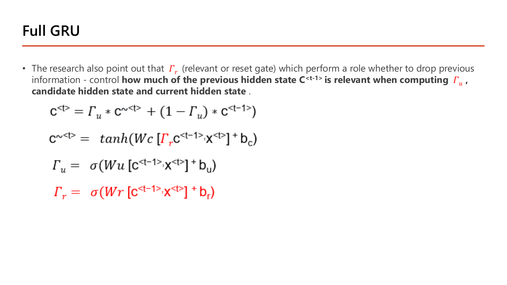
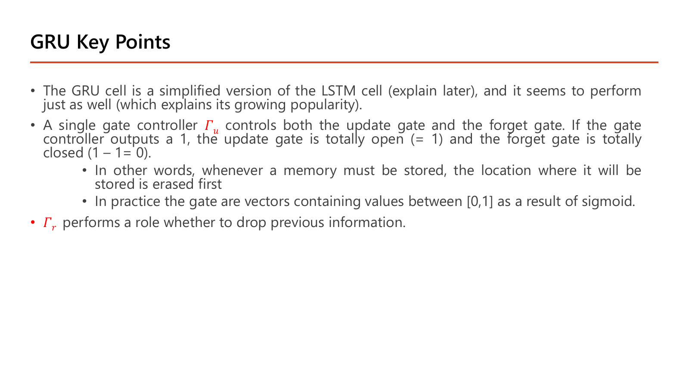
LSTM (Hochreiter & Schmidhuber, 1997) เก่ากว่า GRU และละเอียดกว่า มี state สองตัวและ gate สามตัว
long-term memory = update gate × ค่าใหม่ + forget gate × ค่าเดิม · short-term state = output gate × tanh ของ long-term · ทุก gate คำนวณจาก [a⟨t−1⟩, x⟨t⟩]
LSTM มีสมุดสองเล่ม เล่มใหญ่เก็บเรื่องระยะยาว (c) เล่มเล็กเป็นโน้ตที่หยิบมาใช้ตอนนี้ (a) gate สามตัวคุมว่าจะเขียนอะไรเพิ่ม ลบอะไรทิ้ง และเปิดอะไรออกมาใช้
LSTM เรียนว่า input ไหนสำคัญ (หน้าที่ของ update gate) เก็บไว้นานแค่ไหน (หน้าที่ของ forget gate) และจะดึงออกมาใช้เมื่อไร (หน้าที่ของ output gate) state แบ่งเป็น 2 vector คือ a⟨t⟩ เป็นstate ระยะสั้น และ c⟨t⟩ เป็นstate ระยะยาว gate ทั้งสาม Γ_u, Γ_f, Γ_o ใช้ logistic activation function คือ sigmoid ได้ค่า 0 ถึง 1 ค่า 0 คือปิด 1 คือเปิด เทียบกันแล้ว GRU เป็นรุ่นย่อ ส่วน LSTM ทรงพลังกว่า
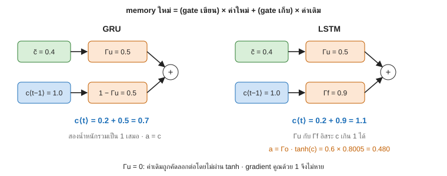
ตัวอย่างในรูป ค่าใหม่ 0.4 ค่าเดิม 1.0 และ Γ_u = 0.5 ทั้งคู่ GRU บังคับให้น้ำหนักของค่าเดิมเป็น 1 − Γ_u จึงได้ 0.7 แต่ LSTM มี Γ_f แยกเป็น 0.9 จึงได้ 1.1 ซึ่งเกิน 1 ได้ LSTM จึงเก็บของเก่าและรับของใหม่ได้พร้อมกัน ส่วน GRU ต้องแลกกัน
| Full GRU | LSTM | |
|---|---|---|
| hidden state | \(a = c\) | \(a = \Gamma_o * \tanh(c)\) |
| memory | \(\Gamma_u \tilde{c} + (1 - \Gamma_u) c_{prev}\) | \(\Gamma_u \tilde{c} + \Gamma_f c_{prev}\) |
| gate | 2 ตัว: Γ_u, Γ_r | 3 ตัว: Γ_u, Γ_f, Γ_o |
| state ที่ส่งต่อ | 1 ตัว | 2 ตัว |
| parameter เทียบ SimpleRNN | 3 เท่า | 4 เท่า |
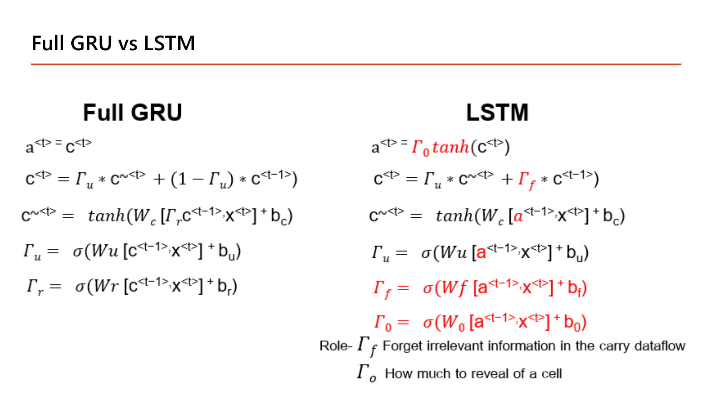
gate สองตัวที่ LSTM มีเพิ่มคือ Γ_f ทำหน้าที่ลืมข้อมูลที่ไม่เกี่ยวข้อง และ Γ_o กำหนดว่าจะเปิดเผยสิ่งที่อยู่ใน cell ออกไปแค่ไหน
ใช้ค่าเดียวกับรูปข้างบน LSTM ค่าใหม่ 0.4 ค่าเดิม 1.0 Γ_u 0.5 Γ_f 0.9 Γ_o 0.6: c = 0.2 + 0.9 = 1.1 · a = 0.6 × tanh(1.1) = 0.6 × 0.8005 = 0.4803 · parameter ที่ n = 16 m = 14: SimpleRNN 496 · GRU 3 × 496 = 1,488 · LSTM 4 × 496 = 1,984 · ถ้าสร้าง GRU(16) ใน Keras แล้วเรียก model.summary() จะเห็น 1,536 ไม่ใช่ 1,488 เพราะ Keras ใช้ bias สองชุด 3 × 512 = 1,536
GRU ไม่มี output gate และ forget ผูกกับ update เป็น 1 − Γ_u · LSTM มี 4 ชุด weight ไม่ใช่ 3 · Γ_u = 0 ใน GRU คือคัดลอก memory เดิม ไม่ใช่ลบ
4 × [32 × (32 + 8) + 32] = 4 × 1,312 = 5,248
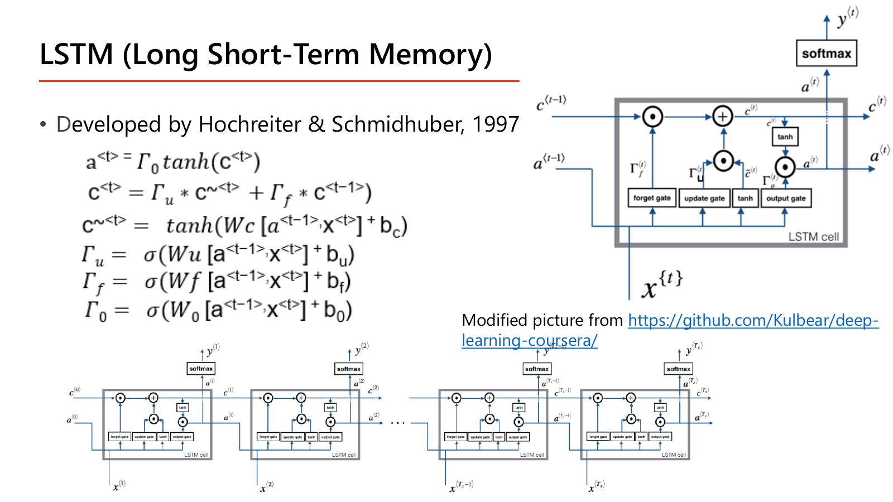
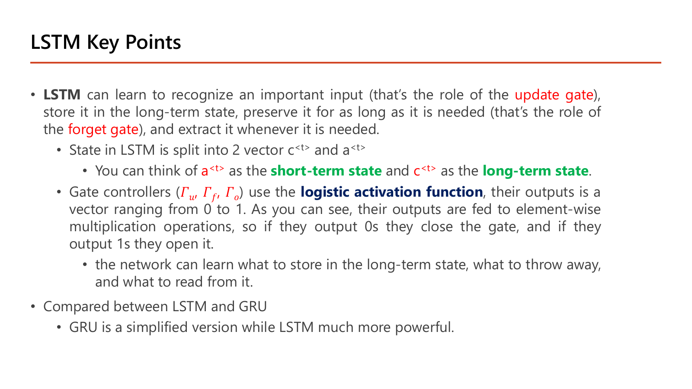
อีกปัญหาที่ตรงข้ามกันคือexploding gradient ซึ่งตรวจเจอง่าย เช่น loss กลายเป็น NaN เกิดเมื่อตัวคูณย้อนเวลามากกว่า 1 แล้วถูกคูณซ้ำจนพุ่ง ReLU อาจไม่ช่วยเพราะไม่มีเพดาน weight ชุดเดียวที่ใช้ซ้ำทุก step จึงขยายค่าต่อไปเรื่อยๆ ได้ ให้ใช้ activation ที่อิ่มตัวอย่าง tanh ซึ่งอยู่ในช่วง −1 ถึง 1 และลดความเสี่ยงด้วยlearning rate เล็กลงหรือgradient clipping ซึ่งย่อ gradient ที่ใหญ่เกินเกณฑ์ลงโดยคงทิศเดิม
gradient [6, 8] norm 10 threshold 5: ย่อด้วย 5/10 ได้ [3, 4] norm 5 ทิศเดิม · Keras: Adam(clipnorm=5.0)
กับ RNN ให้ใช้ tanh ไม่ใช่ ReLU ซึ่งกลับกับคำแนะนำของ feedforward ใน Lesson 5 · clipping ย่อขนาดแต่คงทิศ
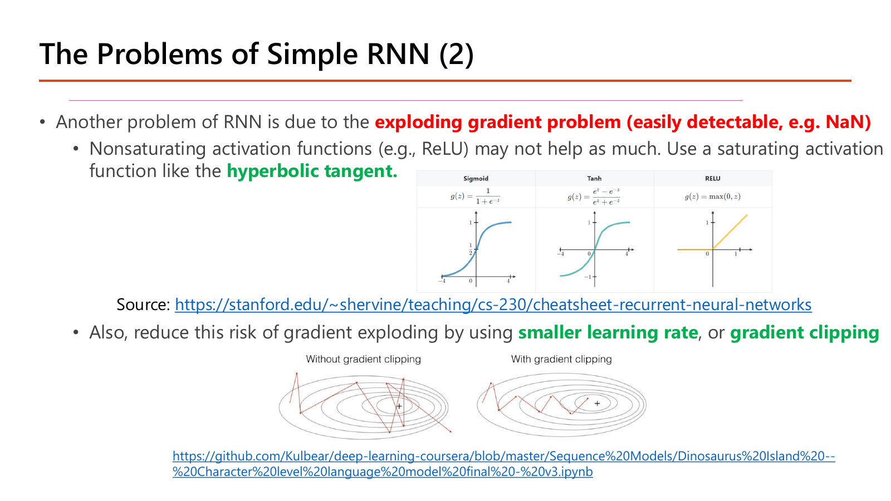
นอกจากเลือก cell แล้ว ยังมีเทคนิคเสริมอีกสามอย่าง
| เทคนิค | ทำอะไร |
|---|---|
| นอกจาก dropout มี recurrent dropout | สุ่มตัด recurrent connection ระหว่างเทรน กัน overfitting |
| Bidirectional RNN, LSTM, GRU | RNN สองตัวอ่านซ้ายไปขวาและขวาไปซ้าย ดีกับงานที่ลำดับย้อนมีความหมาย output ยาวสองเท่า |
| Deep RNN, GRU, LSTM และแบบสองทิศ | ซ้อนหลายชั้นเพิ่ม capacity ต้องตั้ง return_sequences=True ทุกชั้นยกเว้นชั้นสุดท้าย |
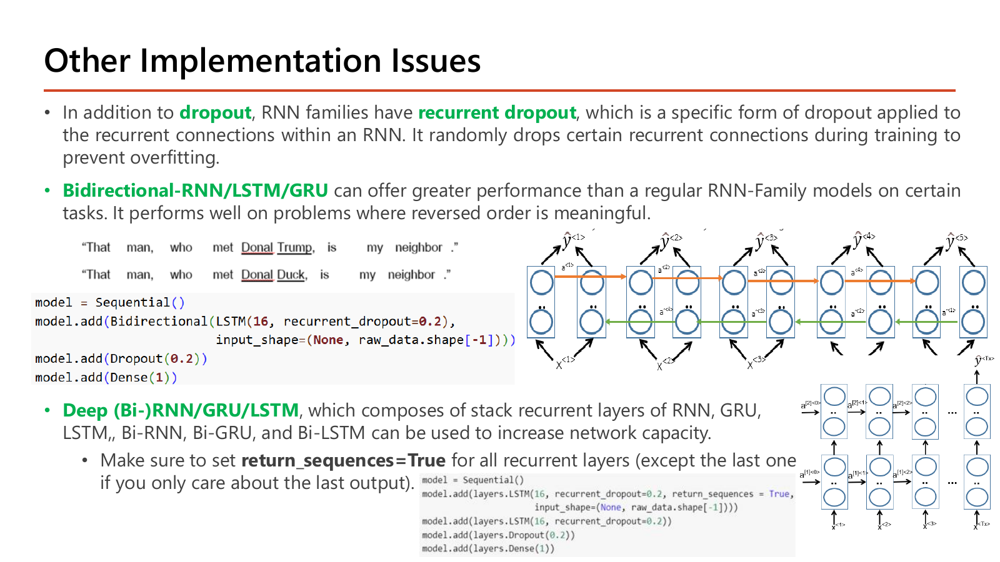
ตัวอย่างที่ต้องใช้ bidirectional: "That man, who met Donal Trump, is my neighbor." กับ "That man, who met Donal Duck, is my neighbor." เหมือนกันจนถึงคำว่า Donal จะรู้ว่า Donal คือใคร ต้องดูคำที่ตามมา RNN ที่อ่านจากซ้ายไปขวายังไม่เห็นคำนั้น แต่ RNN ที่อ่านจากขวาไปซ้ายเห็นก่อน
model = Sequential()
model.add(Bidirectional(LSTM(16, recurrent_dropout=0.2),
input_shape=(None, raw_data.shape[-1])))
model.add(Dropout(0.2))
model.add(Dense(1))
model = Sequential()
model.add(layers.LSTM(16, recurrent_dropout=0.2, return_sequences = True,
input_shape=(None, raw_data.shape[-1])))
model.add(layers.LSTM(16, recurrent_dropout=0.2))
model.add(layers.Dropout(0.2))
model.add(layers.Dense(1))Bidirectional(LSTM(16, recurrent_dropout=0.2), input_shape=...) | LSTM สองตัว output 16 + 16 = 32 · input_shape ใส่ที่ Bidirectional |
recurrent_dropout=0.2 · Dropout(0.2) | dropout บน state ที่ส่งข้าม step · dropout ปกติบน output |
LSTM(16, ..., return_sequences = True) | ชั้นแรกคืนทุก step (None, None, 16) ชั้นถัดไปต้องได้ input 3 มิติ |
LSTM(16, recurrent_dropout=0.2) | ชั้นสุดท้ายคืน step สุดท้าย (None, 16) |
bidirectional: 2 × 1,984 = 3,968 · Dense รับ 32: 33 · รวม 4,001 · deep: ชั้นแรก m = 14 ได้ 1,984 · ชั้นสอง m = 16 จาก output ชั้นแรก ได้ 4 × [16 × 32 + 16] = 2,112 · Dense 17 · รวม 4,113
ลืม return_sequences=True ที่ชั้นแรก ชั้นที่สองได้ input 2 มิติแล้ว error · m ของชั้นที่สองคือจำนวน neuron ชั้นแรก ไม่ใช่ feature ของข้อมูล
ตัวอย่างใหญ่ของบทคือการทายอุณหภูมิ ข้อมูลมาจาก Max Planck Institute ที่เมือง Jena ประเทศเยอรมนี มี 14 ตัวแปร เช่นอุณหภูมิ ความกดอากาศ ความชื้น บันทึกทุก 10 นาที ตัวอย่างใช้ปี 2009–2016 เป้าหมายคือรับข้อมูลย้อนหลังเช่น 5 วัน แล้วทายอุณหภูมิอีก 24 ชั่วโมงข้างหน้า RNN ไม่จำเป็นต้องตัด trend และ seasonality ออกก่อน แต่บางครั้งตัดแล้วช่วยได้ เพราะโมเดลไม่ต้องเรียนส่วนนั้นเอง
จำนวนแถวไม่อยู่บนสไลด์ มาจาก output ใน notebook ของอาจารย์ deep_learning_lecture10_69.ipynb ซึ่งแบ่ง train, val, test 50:25:25 ตามเวลา
print(temp.shape, raw_data.shape)
(420451,) (420451, 14)
number of train samples 210225
number of val samples 105112
number of test samples 105112ชั่วโมงละ 6 แถว วันละ 144 แถว · 420,451 × 0.5 = 210,225 · × 0.25 = 105,112 · val กับ test เป็นช่วงหลัง train ไม่สุ่ม เพราะต้องทายอนาคตจากอดีต
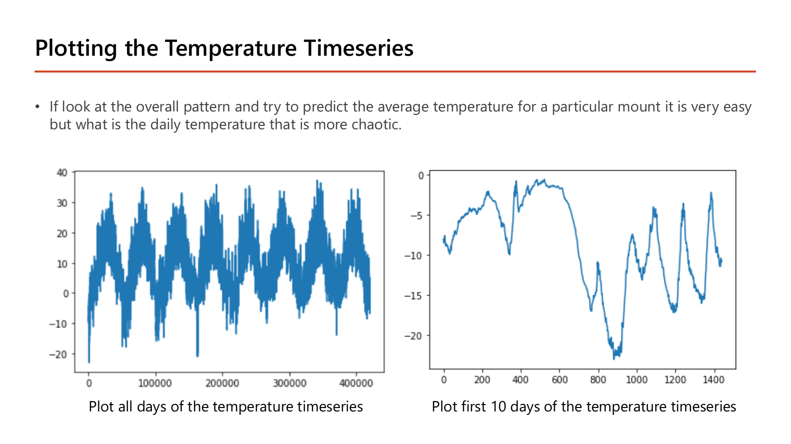
กราฟทั้งช่วงเป็นคลื่นรายปีชัดเจน 8 รอบ การทายอุณหภูมิเฉลี่ยรายเดือนจึงง่าย แต่กราฟ 10 วันแรกขึ้นลงไม่เป็นจังหวะ การทายอุณหภูมิรายวันจึงยากกว่ามาก
ถ้าอยากทายหลาย step ข้างหน้า เช่น 10 step มีสี่วิธีจัด input กับ output
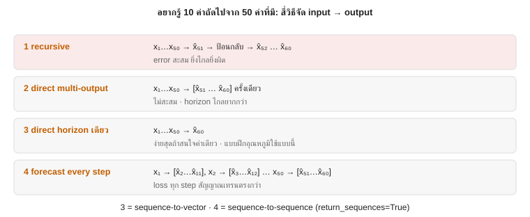
สี่แถวต่างกันที่ว่าโมเดลทายครั้งละกี่ค่า และป้อนคำทายของตัวเองกลับเข้าไปหรือไม่ แถวแรก (recursive) ทายทีละ step แล้วป้อนกลับ ง่ายแต่ error สะสม แถว 2–4 ทายจากข้อมูลจริงตรงๆ จึงไม่สะสม แถว 2 ทายทั้ง 10 ค่าในครั้งเดียว แถว 3 ทายเฉพาะ step ที่ต้องการ แถว 4 ทาย 10 ค่าข้างหน้าที่ทุก time step ได้สัญญาณเทรนมากกว่าแต่เตรียมข้อมูลยากกว่า แบบฝึกอุณหภูมิใช้แบบ 3
กราฟของแบบ recursive ช่วง step 50–60 เส้นจริงกับเส้นทายซ้อนกันตอนแรกแล้วค่อยๆ ถ่างออก ยิ่ง step ไกล error ยิ่งใหญ่ เพราะคำทายที่ผิดนิดหน่อยถูกป้อนกลับเป็น input ของ step ถัดไป ความผิดจึงทบกันไปเรื่อยๆ
ในสไลด์ ชื่อกลยุทธ์ 3 พิมพ์ซ้ำกับ 2 ว่า Direct multi-output forecasting แต่เนื้อหาของกลยุทธ์ 3 คือทาย horizon เดียว
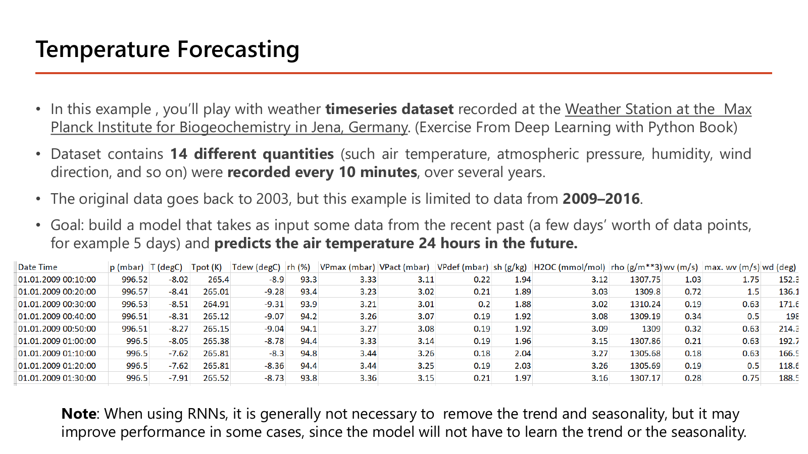
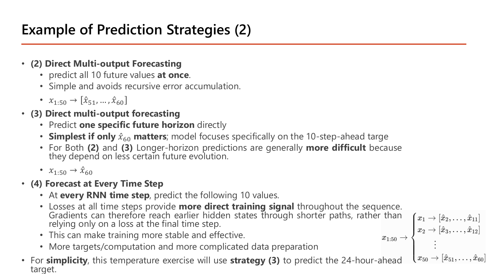
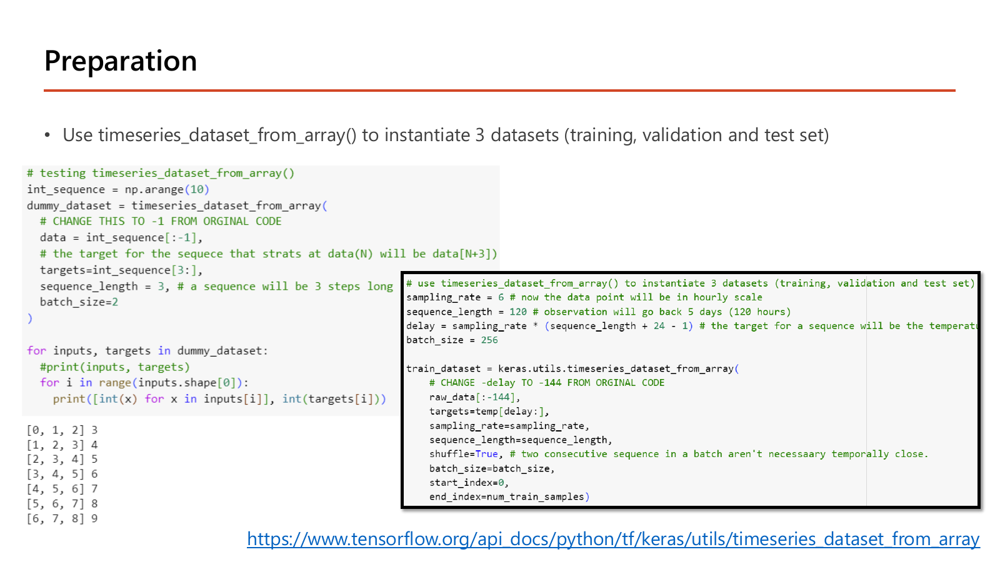
ก่อนใช้กับข้อมูลจริง ลองฟังก์ชันนี้กับเลข 0 ถึง 9 ก่อน หน้าต่างยาว 3 และ target คือค่าถัดจากหน้าต่าง data ใช้แค่ 0–8 จึงได้ 9 − 3 + 1 = 7 หน้าต่าง batch ละ 2 จึงมี 4 batch โดย batch สุดท้ายมีหน้าต่างเดียว
# testing timeseries_dataset_from_array()
int_sequence = np.arange(10)
dummy_dataset = timeseries_dataset_from_array(
# CHANGE THIS TO -1 FROM ORGINAL CODE
data = int_sequence[:-1],
# the target for the sequece that strats at data(N) will be data[N+3])
targets=int_sequence[3:],
sequence_length = 3, # a sequence will be 3 steps long
batch_size=2
)
for inputs, targets in dummy_dataset:
#print(inputs, targets)
for i in range(inputs.shape[0]):
print([int(x) for x in inputs[i]], int(targets[i]))[0, 1, 2] 3
[1, 2, 3] 4
[2, 3, 4] 5
[3, 4, 5] 6
[4, 5, 6] 7
[5, 6, 7] 8
[6, 7, 8] 9ข้อมูลจริงใช้ฟังก์ชันเดียวกัน ต่างกันแค่ตั้ง sampling_rate ให้กลายเป็นรายชั่วโมง และตั้ง delay ให้ target อยู่ 24 ชั่วโมงหลังจุดสุดท้ายของหน้าต่าง
# use timeseries_dataset_from_array() to instantiate 3 datasets (training, validation and test set)
sampling_rate = 6 # now the data point will be in hourly scale
sequence_length = 120 # observation will go back 5 days (120 hours)
delay = sampling_rate * (sequence_length + 24 - 1) # the target for a sequence will be the temperature 24 hours after the end of the sequence
batch_size = 256
train_dataset = keras.utils.timeseries_dataset_from_array(
# CHANGE -delay TO -144 FROM ORGINAL CODE
raw_data[:-144],
targets=temp[delay:],
sampling_rate=sampling_rate,
sequence_length=sequence_length,
shuffle=True, # two consecutive sequence in a batch aren't necessaary temporally close.
batch_size=batch_size,
start_index=0,
end_index=num_train_samples)data = int_sequence[:-1] · targets=int_sequence[3:] | data 0–8 · target ของหน้าต่างที่เริ่ม data[N] คือ data[N+3] |
sampling_rate = 6 | หยิบทุกแถวที่ 6 ข้อมูล 10 นาทีกลายเป็นรายชั่วโมง |
sequence_length = 120 | ย้อนหลัง 120 ชั่วโมง = 5 วัน |
delay = sampling_rate * (sequence_length + 24 - 1) | ระยะเป็นแถวดิบจากต้นลำดับถึง target ที่อยู่ 24 ชั่วโมงหลังจุดสุดท้าย |
shuffle=True | สับลำดับหน้าต่าง ข้อมูลในหน้าต่างยังเรียงตามเวลา |
start_index=0, end_index=num_train_samples | ช่วง train · val และ test เลื่อน start_index ต่อไป |
delay = 6 × (120 + 24 − 1) = 6 × 143 = 858 แถว = 143 ชั่วโมง · จุดสุดท้ายของลำดับอยู่ชั่วโมง 119 บวก 24 ได้ 143 · batch shape (256, 120, 14) target (256,)
ผลของแต่ละโมเดลไม่อยู่บนสไลด์ มาจาก notebook ตัวเดียวกัน ตัวเลขคือ MAE บน test หน่วยองศาเซลเซียส ยิ่งต่ำยิ่งดี baseline ไม่ใช้ machine learning เลย แค่ทายว่าอีก 24 ชั่วโมงอุณหภูมิเท่าตอนนี้
| โมเดลใน notebook | Test MAE |
|---|---|
| baseline ทายว่าเท่าตอนนี้ | 2.62 |
| GRU(16) | 2.53 |
| LSTM(16) + recurrent dropout | 2.55 |
| LSTM ซ้อน 2 ชั้น | 2.54 |
| Conv1D + LSTM | 2.94 |
| Bidirectional LSTM(16) | 2.52 |
ตัวอย่างนี้มีไว้ให้เห็นว่า RNN ชนะ baseline แค่ราว 0.1 องศา และ Conv1D แพ้ baseline ด้วยซ้ำ ต้องเทียบกับ baseline ก่อนเสมอ ไม่งั้นไม่รู้ว่าโมเดลดีจริงไหม
"− 1" ใน delay มาจากลำดับ 120 จุดครอบคลุม 119 ช่วง · shuffle=True สับระหว่างหน้าต่าง ไม่ได้สับในหน้าต่าง
sampling_rate 3 คือทุก 30 นาที 12 ชั่วโมง = 24 จุด · delay = 3 × (48 + 24 − 1) = 3 × 71 = 213 แถว
NLP คือสาขาที่ทำให้คอมพิวเตอร์เข้าใจภาษามนุษย์ แล้วทำนายหรือสร้างสิ่งที่มีประโยชน์ งานมีตั้งแต่ง่ายเช่นตรวจคำผิด (spell checking) ระดับกลางเช่นจำแนกข้อความ (text classification) ไปจนถึงยากเช่นสรุปความ (summarization) ตอบคำถาม (QA) และแปลภาษา (machine translation)
| ช่วง | แนวทาง |
|---|---|
| ถึงทศวรรษ 1990 | กฎเขียนมือ |
| 1990s ถึงต้น 2010s | decision tree และ logistic regression เน้น feature engineering |
| 2011 | deep learning กับ ข้อมูลเสียงพูด |
| 2014–2017 | LSTM แล้ว Bidirectional LSTM เป็นมาตรฐาน |
| 2017–2018 | Transformer ปฏิวัติ NLP |
ข้อความยากกว่าภาพสี่เรื่อง: คำ โดยลำพัง ไม่มีความหมายจริง ความหมายมาจาก บริบท · ลำดับคำ สำคัญ และมี ความสัมพันธ์ระยะไกล · ข้อความ มี โครงสร้างไวยากรณ์ตามกฎ และต้องสมเหตุสมผล · ข้อความ ไวต่อการเปลี่ยนเล็กน้อย เพราะ ทุกคำสำคัญต่อความหมายทั้งข้อความ เปลี่ยน pixel 120 เป็น 121 ภาพยังเหมือนเดิม แต่เติม not คำเดียว ความหมายกลับด้าน
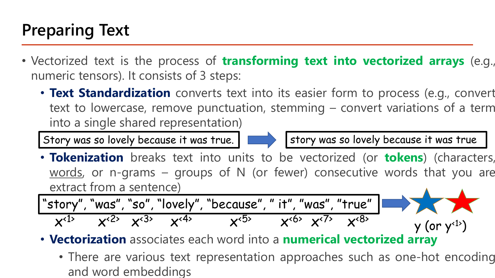
ก่อนเข้าโมเดลต้อง แปลงข้อความเป็น array ตัวเลข ซึ่งมีสามขั้น:
| ขั้น | ทำอะไร |
|---|---|
| Text standardization | ตัวพิมพ์เล็ก ลบวรรคตอน stemming · "Story was so lovely because it was true." → "story was so lovely because it was true" |
| Tokenization | แบ่งเป็น token คือตัวอักษร คำ หรือ n-gram · ประโยคในสไลด์ได้ 8 token x⟨1⟩ ถึง x⟨8⟩ |
| Vectorization | ผูกแต่ละ token กับ array ตัวเลข เช่น one-hot หรือ embedding |
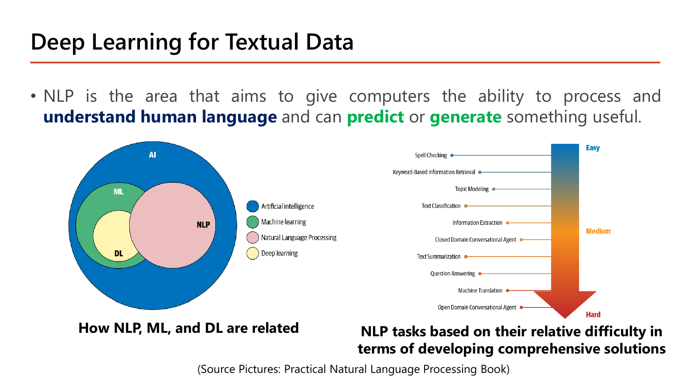
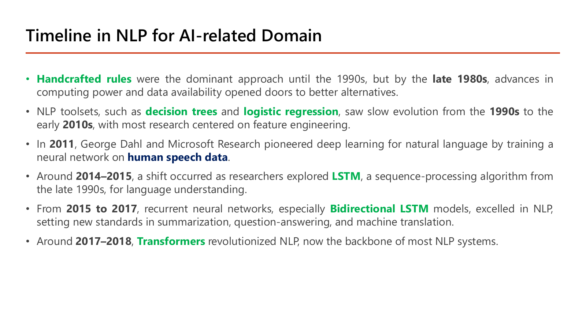
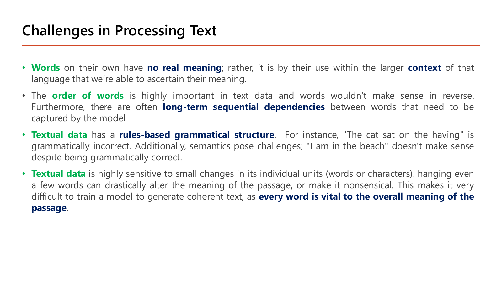
one-hot เหมือนให้ทุกคนในห้องมีเลขที่ประจำตัว รู้เลขที่ไม่ได้บอกว่าใครนิสัยคล้ายใคร embedding เหมือนให้แต่ละคนมีคะแนนหลายด้าน เช่นชอบกีฬาแค่ไหน ชอบดนตรีแค่ไหน คนที่คะแนนใกล้กันก็นิสัยคล้ายกัน
วิธีง่ายที่สุดคือ one-hot ให้ index กับทุกคำ แล้วแทนคำด้วย vector ยาวเท่า vocabulary ที่เป็น 0 ทั้งหมด ยกเว้นตำแหน่งของคำนั้นเป็น 1 ปัญหาคือ one-hot มองคำเป็นหน่วยเดี่ยว ไม่ดูบริบท ทุกคำห่างกันเท่ากันหมด โมเดลจึง generalize เอาสิ่งที่เรียนจากคำหนึ่งไปใช้กับคำที่ต่างกันไม่ได้ ถ้ารู้ความหมายของคำ โมเดลจะเรียน feature ร่วมกันได้ อีกปัญหาคือ vector ยาวตาม vocabulary จึงคำนวณไม่มีประสิทธิภาพ
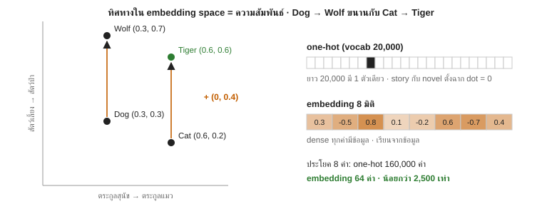
ซ้ายคือ embedding 2 มิติ จาก Dog ไป Wolf ขยับขึ้น (0, 0.4) ถ้าเลื่อน Cat ไปทิศเดียวกันจะได้ Tiger ทิศทางจึงแทนความสัมพันธ์ "สัตว์เลี้ยง → สัตว์ป่า" ขวาคือ one-hot ที่มีเลข 1 ตัวเดียวใน 20,000 เทียบกับ embedding ที่ทุกค่ามีข้อมูล
ใช้ประโยค 8 token จากหน้า 31 และสมมติ vocab 20,000: one-hot 160,000 ค่า ไม่เป็นศูนย์ 0.005% · embedding 8 มิติ 64 ค่า น้อยกว่า 2,500 เท่า · dot product ของ one-hot story กับ novel = 0 เท่าคู่อื่นทุกคู่
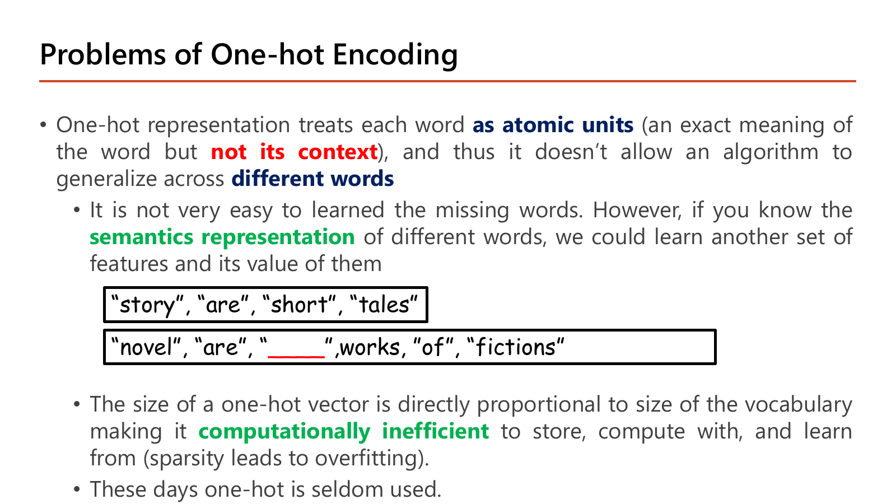
ตัวอย่างในสไลด์: ถ้าเคยเห็น "story are short tales" แล้วต้องเติม "novel are ____ works of fictions" คนที่รู้ว่า novel ความหมายใกล้ story จะเดาคำบอกความยาวได้ แต่ one-hot ไม่รู้ว่า novel ใกล้ story
ทางแก้มีสองกลุ่ม
| กลุ่ม | เทคนิค | ลักษณะ |
|---|---|---|
| Information retrieval | Bag of Words, TF-IDF | จับ ความคล้ายเชิงเอกสาร ยังเป็น sparse ยาวเท่า vocabulary |
| Word embeddings | Word2Vec, GloVe | ใช้คำข้างเคียงเป็นบริบท ได้ ความคล้ายเชิงความหมายที่มีความหมาย เป็น เทคนิคพื้นฐานของงาน NLP |
TF-IDF ยังเป็น sparse ไม่ใช่ dense · คำที่พบทุกเอกสารเช่น the ได้น้ำหนัก TF-IDF ต่ำ
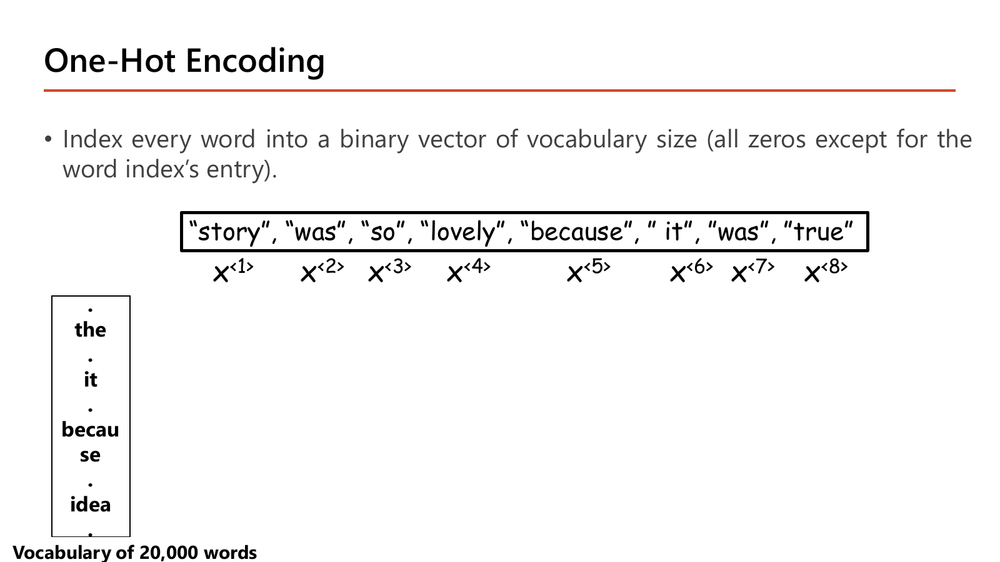
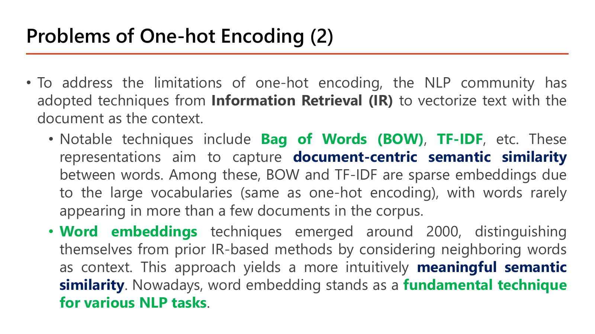
Word embeddings แทนคำด้วย vector ทศนิยม ต่างจาก one-hot ตรงที่dense มิติค่อนข้างต่ำ ซึ่งลดขนาดข้อมูลที่ต้องใช้เทรน และเรียนได้เร็วจากความสัมพันธ์เชิงความหมายของคำ การขยับไปทิศใดทิศหนึ่งใน vector space แทนความสัมพันธ์ระหว่างคำ สรุปสั้นๆ: one-hot เป็น sparse มิติสูง กำหนดตายตัว (hardcoded) · embedding เป็น dense มิติต่ำ เรียนจากข้อมูล
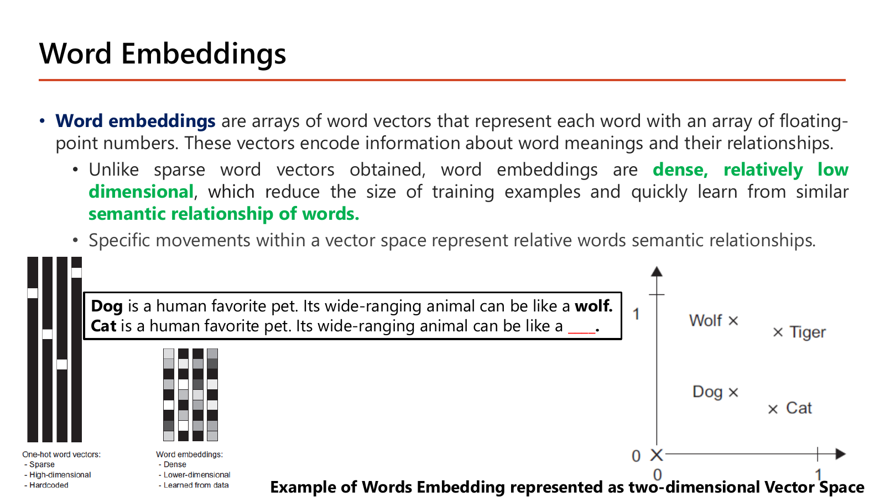
คำที่ควรเติมในช่องว่างคือ tiger สไลด์ไม่ได้ให้พิกัด ถ้าใช้พิกัดจากรูปวาดในหัวข้อ 5.2 Dog (0.3, 0.3) ไป Wolf (0.3, 0.7) ขยับ (0, 0.4) เลื่อน Cat (0.6, 0.2) ไปเท่ากันได้ (0.6, 0.6) ตรงกับจุด Tiger
วิธีง่ายที่สุดในการได้ embedding คือเรียนไปพร้อมกับงานหลัก เรียกว่าแบบ unsupervised เพราะ label มาจากตัวข้อความเอง ไม่ต้องมีคนติดป้าย Embedding layer ทำหน้าที่แปลง index ของคำเป็น dense vector ตัวอย่างคือ vocab 10,000 คำ ใช้ 3 คำก่อนหน้าทายคำถัดไป
คูณ embedding matrix กับ one-hot = หยิบคอลัมน์ที่ตรงตำแหน่งเลข 1 · Keras lookup ตาม index แทนการคูณจริง
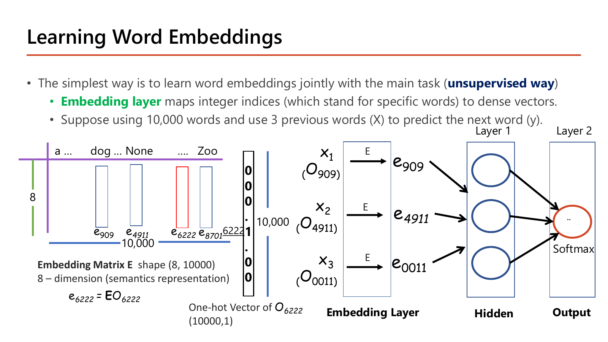
E มี 8 × 10,000 = 80,000 parameter · hidden layer รับ 3 × 8 = 24 ค่า แทน 3 × 10,000 = 30,000 ถ้าป้อน one-hot · output softmax 10,000 node · Keras: Embedding(input_dim=10000, output_dim=8)
เมื่อได้ embedding แล้ว นำไปจำแนกข้อความได้สองแบบ ตามสองรูปในสไลด์ แบบแรกทางซ้าย Embedding + Flatten + Dense ตำแหน่งคำผูกกับ weight จึงต้องยาวเท่ากันทุกประโยค ประโยคในรูป every good boy does fine มี 5 คำ ถ้าสมมติ embedding 8 มิติ flatten แล้ว dense รับ 40 ค่า แบบที่สองทางขวา Embedding + RNN ป้อน vector ทีละคำ จึงรับความยาวต่างกันได้
ถ้าไม่อยากเรียนเอง ใช้ pretrained embedding ที่เรียนจากข้อความจำนวนมากไว้แล้ว มองเป็นคู่ key-value: key คือคำ value คือ vector ตัวที่นิยมคือ Word2Vec ของ Mikolov ที่ Google ปี 2013, GloVe ของ Stanford ปี 2014 และ fastText ของ Facebook Word2Vec เรียนแบบ self-supervised ได้สองแบบ:
| แบบ | ทาย | ลักษณะ |
|---|---|---|
| CBOW | คำกลางจากคำรอบข้าง | 1 sample ต่อคำกลาง |
| SkipGram | คำรอบข้างจากคำกลาง | 1 sample ต่อคู่ ช้ากว่า ดีกับคำหายากและ dataset เล็ก |
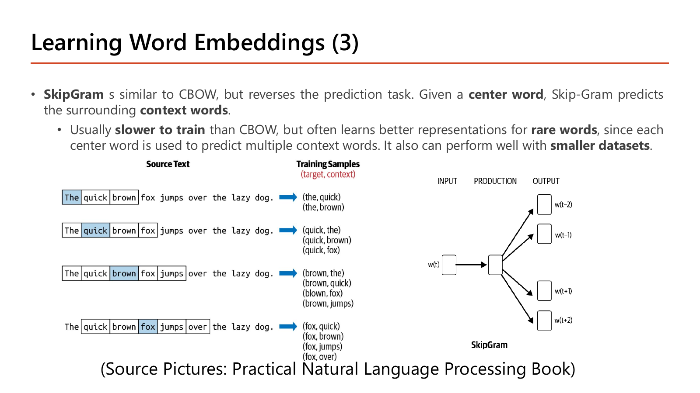
"The quick brown fox jumps …" หน้าต่าง 2 ข้าง: บริบทของ The, quick, brown, fox มี 2, 3, 4, 4 คำ · CBOW ได้ 4 sample · SkipGram ได้ 2 + 3 + 4 + 4 = 13 คู่ ราว 3 เท่า
ในรูป SkipGram มีคู่หนึ่งพิมพ์ว่า (blown, fox) หมายถึง (brown, fox) · CBOW ทายคำกลาง SkipGram ทายคำรอบข้าง อย่าสลับ
5,000 × 64 = 320,000 · output (20, 64) ต่อประโยค หรือ (batch, 20, 64)
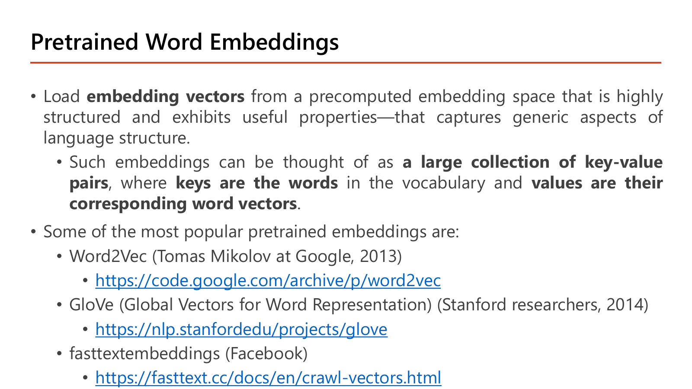
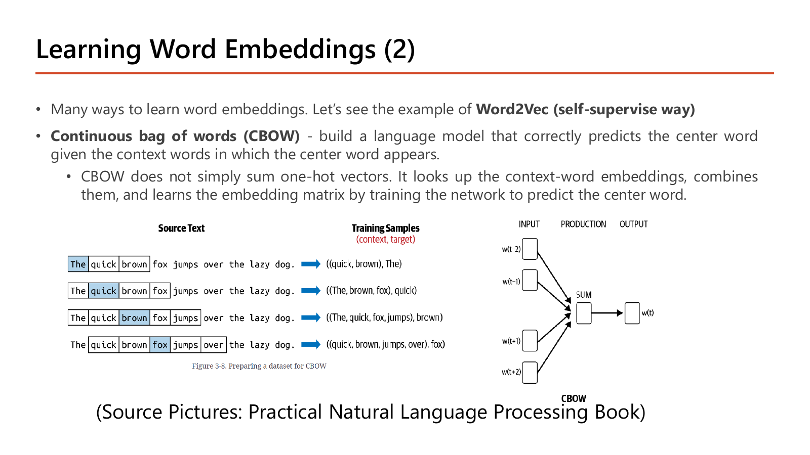
ตัวอย่างสุดท้ายจำแนกรีวิวหนัง IMDB ว่าบวกหรือลบ โฟลเดอร์ train/pos มีรีวิวบวก 12,500 ไฟล์ train/neg มีรีวิวลบอีก 12,500 ไฟล์ รวม train 25,000 และ test อีก 25,000 โค้ดแยกส่วนหนึ่งของ train ไปเป็น val จึงพิมพ์ว่า Found 20000 files (train), 5000 (val), 25000 (test) · inputs.shape (32,) dtype string · targets.shape (32,) dtype int32
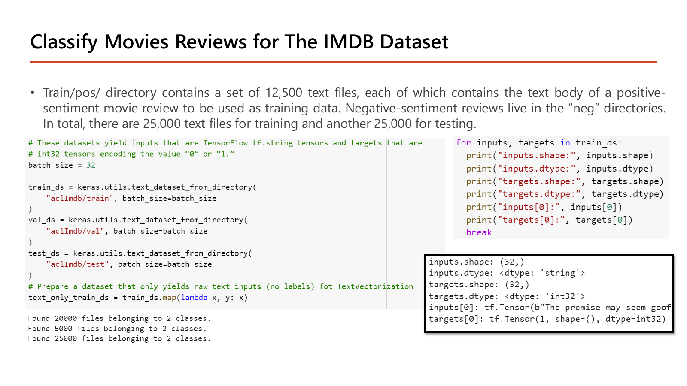
input ยังเป็นข้อความดิบ หนึ่งรีวิวต่อสมาชิก จึงมี shape (32,) มิติเดียว ต้องผ่าน TextVectorization ก่อนเข้าโมเดล จำนวน batch ต่อ epoch: train 20,000/32 = 625 · test ⌈25,000/32⌉ = 782
# These datasets yield inputs that are TensorFlow tf.string tensors and targets that are
# int32 tensors encoding the value "0" or "1."
batch_size = 32
train_ds = keras.utils.text_dataset_from_directory(
"aclImdb/train", batch_size=batch_size
)
val_ds = keras.utils.text_dataset_from_directory(
"aclImdb/val", batch_size=batch_size
)
test_ds = keras.utils.text_dataset_from_directory(
"aclImdb/test", batch_size=batch_size
)
# Prepare a dataset that only yields raw text inputs (no labels) fot TextVectorization
text_only_train_ds = train_ds.map(lambda x, y: x)
for inputs, targets in train_ds:
print("inputs.shape:", inputs.shape)
print("inputs.dtype:", inputs.dtype)
print("targets.shape:", targets.shape)
print("targets.dtype:", targets.dtype)
print("inputs[0]:", inputs[0])
print("targets[0]:", targets[0])
break
text_vectorization = TextVectorization(
max_tokens=20000,
output_mode="int", # Configures the layer to return sequences of words encoded as integer indices.
)
# index the vocabulary of a text corpus using adapt() method
text_vectorization.adapt(text_only_train_ds)
# # retrieve the computed vocabulary
# There are two special tokens that you will commonly use:
# the mask token (index 0) for padding and the OOV token (index 1) - not recognize words
vocabulary = text_vectorization.get_vocabulary()
vocabularytext_dataset_from_directory("aclImdb/train", ...) | อ่านไฟล์ข้อความ label 0/1 จากชื่อโฟลเดอร์ neg, pos |
train_ds.map(lambda x, y: x) | เหลือแค่ข้อความ ให้ TextVectorization เรียน vocabulary |
TextVectorization(max_tokens=20000, output_mode="int") | default: lowercase ลบวรรคตอน split ตามช่องว่าง · คืนลำดับ index รักษาลำดับคำ |
text_vectorization.adapt(text_only_train_ds) | สร้าง vocabulary จาก training set |
| index 0 และ 1 | 0 = mask token สำหรับ padding · 1 = OOV token คำที่ไม่อยู่ใน vocabulary |
สมมติ vocabulary ["", "[UNK]", "the", "movie", "was", "great"]: "The movie was GREAT!!" ได้ [2, 3, 4, 5] · "The film was great" ได้ [2, 1, 4, 5] เพราะ film ไม่อยู่ใน vocabulary
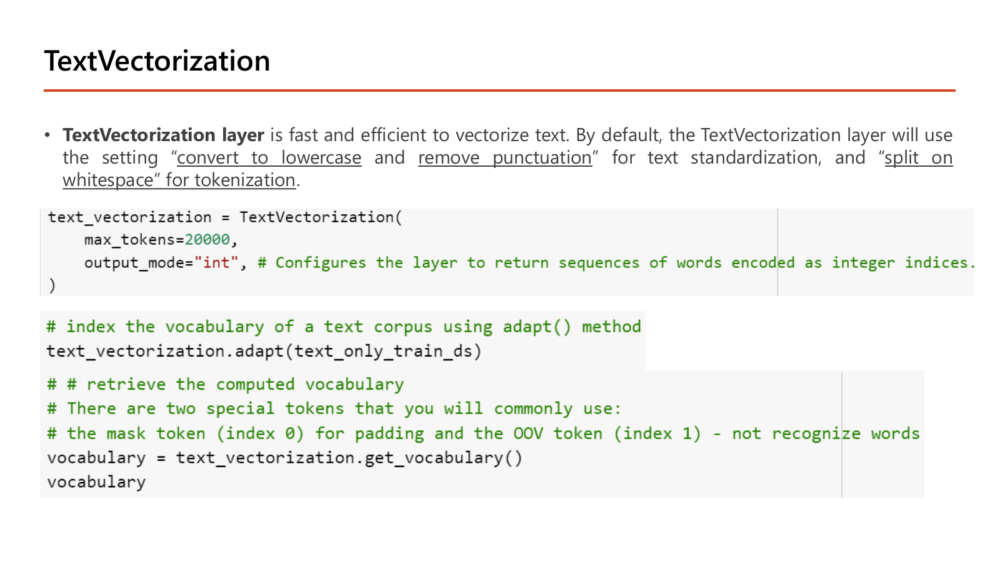
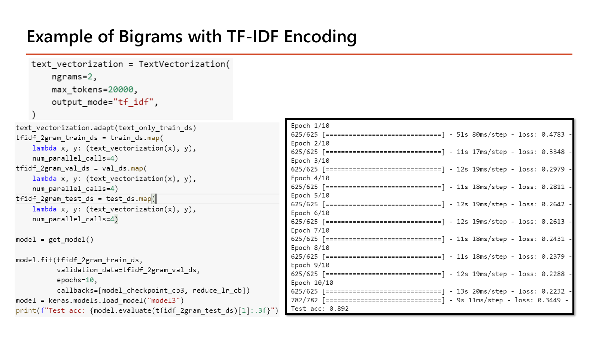
แนวทางแรกไม่สนลำดับคำ แต่ดูว่ามีคำและคู่คำ (bigram) อะไรบ้าง แล้วถ่วงน้ำหนักด้วย TF-IDF รีวิวหนึ่งเรื่องจึงกลายเป็น vector ยาว 20,000 ค่า ไม่ใช่ลำดับ แล้วเข้า dense model loss ลดจาก 0.4783 เหลือ 0.2232 ใน 10 epoch ได้ Test acc 0.892
text_vectorization = TextVectorization(
ngrams=2,
max_tokens=20000,
output_mode="tf_idf",
)
text_vectorization.adapt(text_only_train_ds)
tfidf_2gram_train_ds = train_ds.map(
lambda x, y: (text_vectorization(x), y),
num_parallel_calls=4)
tfidf_2gram_val_ds = val_ds.map(
lambda x, y: (text_vectorization(x), y),
num_parallel_calls=4)
tfidf_2gram_test_ds = test_ds.map(
lambda x, y: (text_vectorization(x), y),
num_parallel_calls=4)
model = get_model()
model.fit(tfidf_2gram_train_ds,
validation_data=tfidf_2gram_val_ds,
epochs=10,
callbacks=[model_checkpoint_cb3, reduce_lr_cb])
model = keras.models.load_model("model3")
print(f"Test acc: {model.evaluate(tfidf_2gram_test_ds)[1]:.3f}")ngrams=2 | unigram + bigram · "the cat sat" ได้ the, cat, sat, the cat, cat sat รวม 5 |
output_mode="tf_idf" | คืน vector ยาว max_tokens น้ำหนัก TF-IDF ต่อ token |
train_ds.map(lambda x, y: (text_vectorization(x), y), num_parallel_calls=4) | แปลงทุก batch คง label · ทำขนาน 4 เส้น |
callbacks=[model_checkpoint_cb3, reduce_lr_cb] · load_model("model3") | ModelCheckpoint, ReduceLROnPlateau จาก Lesson 6 · โหลดตัวดีสุดก่อน evaluate |
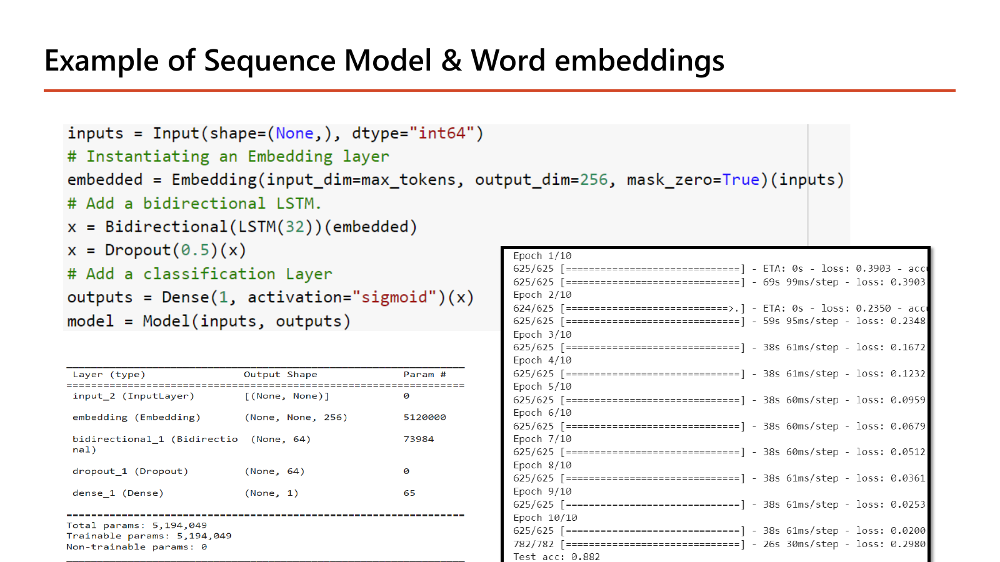
แนวทางที่สองเก็บลำดับคำไว้ ใช้ output_mode="int" ได้ลำดับ index แล้วเข้า Embedding และ Bi-LSTM เขียนด้วย Functional API ได้ Test acc 0.882 ต่ำกว่า bigram เล็กน้อย training loss ลงถึง 0.0200 แต่ test loss อยู่ที่ 0.2980 เป็นสัญญาณ overfitting งานจำแนก sentiment หลายงานแค่รู้ว่ามีคำอะไรบ้างก็พอแล้ว
inputs = Input(shape=(None,), dtype="int64")
# Instantiating an Embedding layer
embedded = Embedding(input_dim=max_tokens, output_dim=256, mask_zero=True)(inputs)
# Add a bidirectional LSTM.
x = Bidirectional(LSTM(32))(embedded)
x = Dropout(0.5)(x)
# Add a classification Layer
outputs = Dense(1, activation="sigmoid")(x)
model = Model(inputs, outputs)Input(shape=(None,), dtype="int64") | ลำดับ index ยาวเท่าใดก็ได้ |
Embedding(input_dim=max_tokens, output_dim=256, mask_zero=True) | vocab 20,000 มิติ 256 output (None, None, 256) · เปิด masking ของ index 0 |
Bidirectional(LSTM(32)) | output (None, 64) |
Dense(1, activation="sigmoid") | บวกหรือลบ |
Embedding 20,000 × 256 = 5,120,000 · LSTM หนึ่งทิศ 4 × [32 × 288 + 32] = 36,992 · สองทิศ 73,984 · Dense 65 · total 5,194,049 · embedding กิน 98.6%
โมเดลซับซ้อนกว่าไม่ได้ชนะเสมอ: bigram TF-IDF 0.892 ชนะ Bi-LSTM 0.882 · Embedding input_dim คือขนาด vocabulary output_dim คือมิติ vector
อ่านหนังสือที่มีหน้าว่างแทรกท้ายบท ถ้าต้องอ่านหน้าว่างทุกหน้าด้วย เนื้อเรื่องที่จำไว้จะเลือนไป masking คือบอกให้ข้ามหน้าว่างไปเลย
ประโยคใน batch ต้องยาวเท่ากัน ประโยคที่สั้นกว่าจึงถูกเติม 0 ต่อท้าย (padding) ถ้ามี 0 เยอะ ข้อมูลใน state จะจางลงเพราะ RNN ต้องประมวลผลค่าที่ไม่มีความหมาย Masking บอกโมเดลให้ข้ามการประมวลผลตำแหน่งเหล่านี้
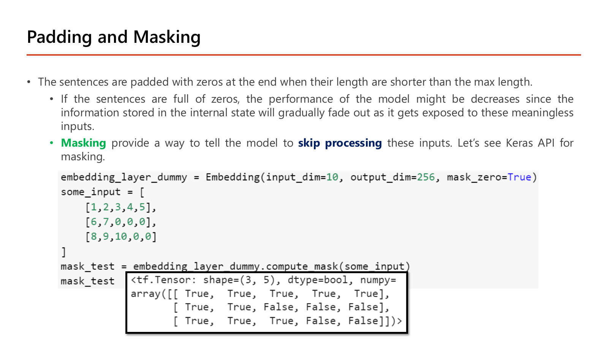
mask ที่พิมพ์มี shape (3, 5) เท่า input แถวสองมี True 2 ตัวตรง token 6, 7 และ False 3 ตัวตรง padding รวม token จริง 5 + 2 + 3 = 10 จาก 15 ตำแหน่ง RNN หยุดอัปเดต state ที่ False
embedding_layer_dummy = Embedding(input_dim=10, output_dim=256, mask_zero=True)
some_input = [
[1,2,3,4,5],
[6,7,0,0,0],
[8,9,10,0,0]
]
mask_test = embedding_layer_dummy.compute_mask(some_input)
mask_test<tf.Tensor: shape=(3, 5), dtype=bool, numpy=
array([[ True, True, True, True, True],
[ True, True, False, False, False],
[ True, True, True, False, False]])>True คือ token จริง False คือ padding ที่ข้าม · mask_zero=True ทำให้ index 0 ใช้แทนคำจริงไม่ได้
ลองฝึกต่อในแบบฝึก Lesson 10 หรืออ่านต่อ Lesson 11 — Text Generation, Translation และ Transformer
| หน้า | เนื้อหา | อยู่ในตอน |
|---|---|---|
| 1 | ปก Part 4 | etc — ปก |
| 2–9 | Sequence data, RNN, temperature table, unrolled, forward propagation | ตอน 1 |
| 10–13 | Types of RNN, BPTT, problems of simple RNN | ตอน 2 |
| 14–20 | GRU, full GRU, LSTM, GRU vs LSTM | ตอน 3 |
| 21–27 | Exploding gradient, implementation issues, temperature forecasting, strategies, dataset | ตอน 4 |
| 28–40 | NLP, challenges, preparing text, one-hot, embeddings, Word2Vec | ตอน 5 |
| 41–45 | IMDB, TextVectorization, TF-IDF bigram, Embedding + Bi-LSTM, masking | ตอน 6 |
ตัวเลข parameter, forward pass, gate และ delay ทุกตัวคำนวณซ้ำด้วย Python แล้ว